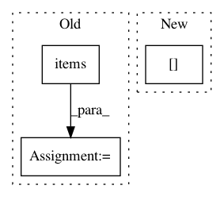

59f9ad357b11b973b9c64dcfeb7cf7b856bbae91,softlearning/replay_pools/goal_replay_pool.py,GoalReplayPool,add_samples,#GoalReplayPool#Any#,69
Before Change
)
goals = type(full_observations)(
(goal_key, full_observations[observation_key])
for observation_key, goal_key
in self._environment.goal_key_map.items()
)
samples.update({
"observations": observations,
After Change
def add_samples(self, samples, *args, **kwargs):
observations = type(samples["observations"])(
(key, values)
for key, values in samples["observations"].items()
if key in self._environment.observation_keys
)
next_observations = type(samples["next_observations"])(
In pattern: SUPERPATTERN
Frequency: 3
Non-data size: 3
Instances
Project Name: rail-berkeley/softlearning
Commit Name: 59f9ad357b11b973b9c64dcfeb7cf7b856bbae91
Time: 2019-06-24
Author: hartikainen@berkeley.edu
File Name: softlearning/replay_pools/goal_replay_pool.py
Class Name: GoalReplayPool
Method Name: add_samples
Project Name: rail-berkeley/softlearning
Commit Name: 1bf94047a37fc075277f3eaa53f3656b73fa7c2f
Time: 2018-12-21
Author: hartikainen@berkeley.edu
File Name: softlearning/replay_pools/simple_replay_pool.py
Class Name: SimpleReplayPool
Method Name: batch_by_indices
Project Name: apple/coremltools
Commit Name: cc6085567559b008c831d07fcb7c1f53bea9a699
Time: 2019-08-30
Author: shuoxin_lin@apple.com
File Name: coremltools/converters/nnssa/frontend/tensorflow/load.py
Class Name:
Method Name: load